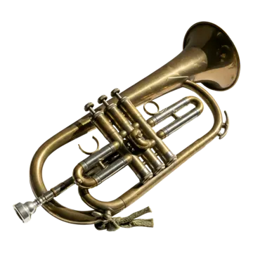
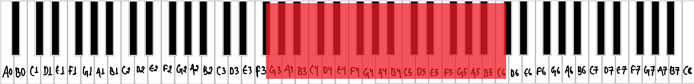
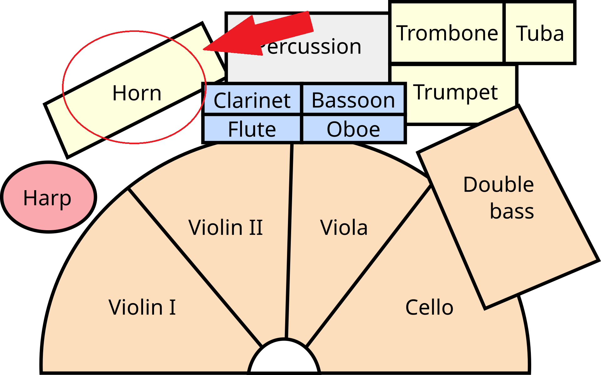
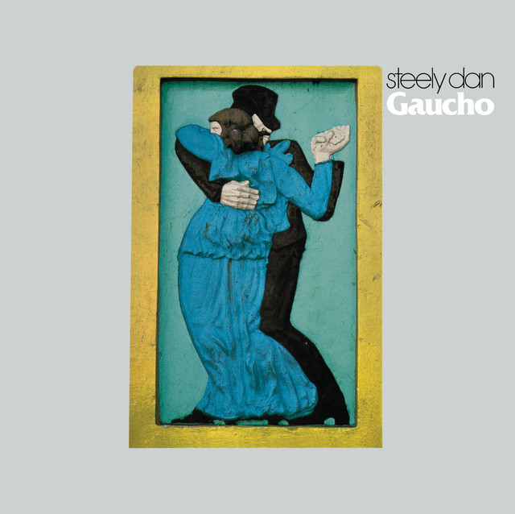
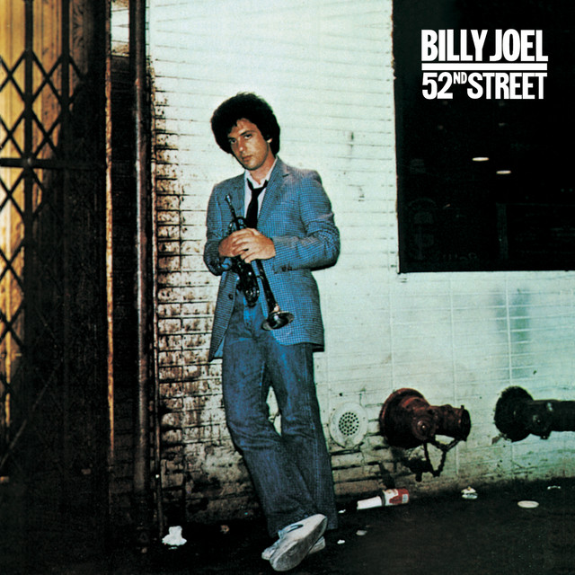
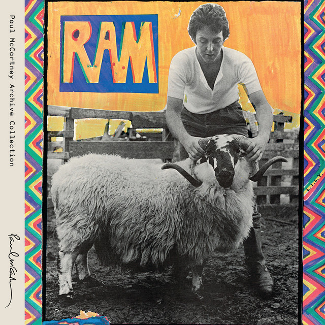

What is a flugelhorn?
The flugelhorn is a brass instrument that looks like a trumpet but has a wider, more conical bore. This gives it a dark, smooth and mellow tone. It is popular in jazz and brass bands for lyrical, singing melodies. [1]

Musical range and clef
The B♭ flugelhorn has about the same range as a B♭ trumpet, from F♯3 up to roughly C6. The highest notes are harder to play than on a trumpet. [2]
Flugelhorn music is written in the treble clef and is transposed, like the trumpet. [3]


Where is the flugelhorn seated in an orchestra?
The brass section sits at the back of the orchestra, behind the woodwinds. From the conductor's podium, the horns are in the center, with the trumpets to their right and the trombones and tuba at the far right. The flugelhorn is not a standard orchestral instrument. When a piece includes one, the player usually sits with the trumpets. [4]

Popular songs/pieces that feature the instrument:

Babylon Sisters

Zanzibar

Uncle Albert / Admiral Halsey
References
- Wikipedia, "Flugelhorn".
- Wikipedia, "Flugelhorn".
- Wikipedia, "Flugelhorn".
- Rockford Symphony Orchestra, "Are all orchestras arranged on stage the same way?".